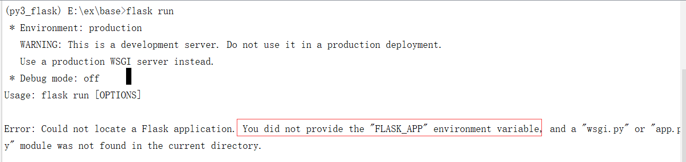

服务器启动方式
在1.0版本之后，Flask调整了开发服务器的启动方式，由代码编写app.run()语句调整为命令flask run启动。
rom flask import Flask
app = Flask(__name__)
@app.route('/')
def index():
return 'Hello World'
# 程序中不用再写app.run()
终端启动
$ export FLASK_APP=helloworld
$ flask run
* Running on http://127.0.0.1:5000/
说明
- 环境变量 FLASK_APP 指明flask的启动实例

flask run -h 0.0.0.0 -p 8000绑定地址 端口flask run --help获取帮助生产模式与开发模式的控制
通过
FLASK_ENV环境变量指明export FLASK_ENV=production运行在生产模式，未指明则默认为此方式export FLASK_ENV=development运行在开发模式
Windows 中需要采用 set FLASK_APP=helloworld